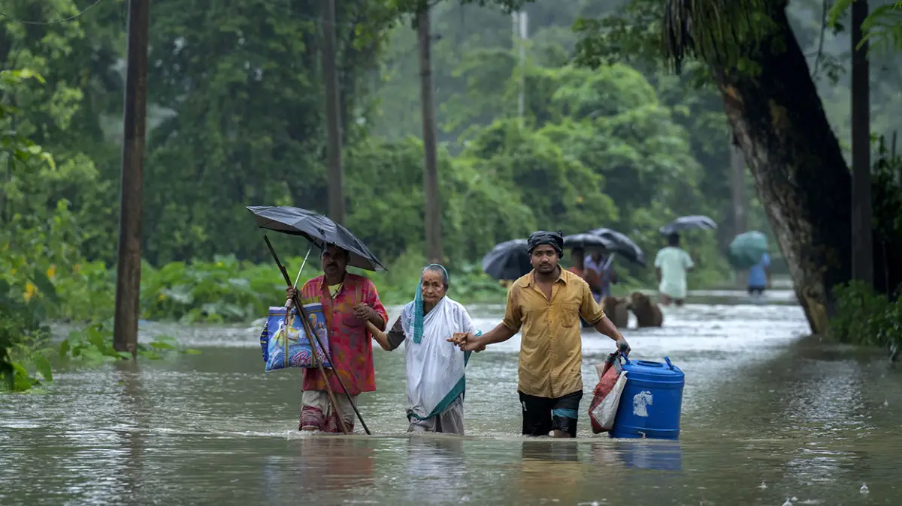
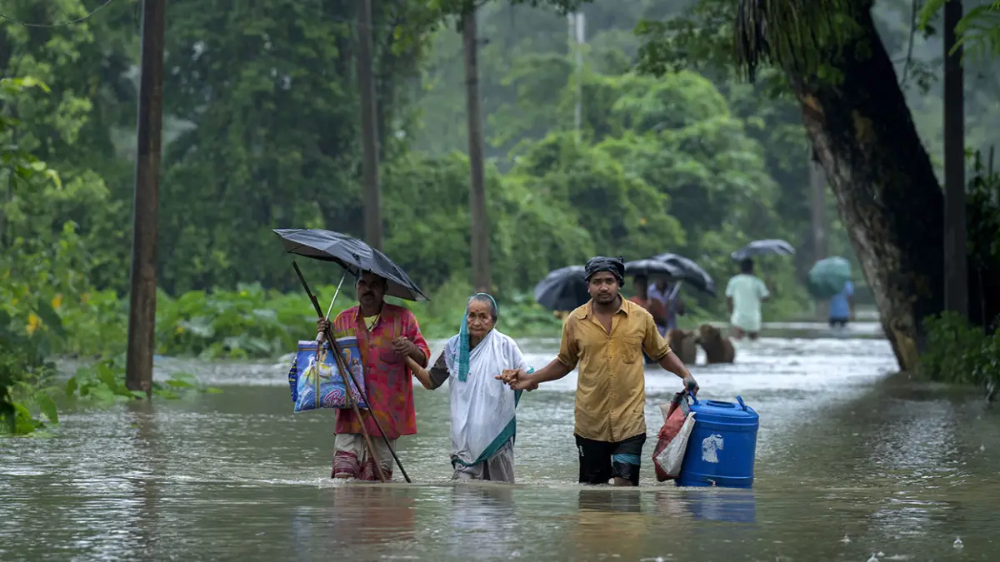

Our Donate Plan
Our intentions are to provide Emergency Aid to those in need and help the flood victims of Bangladesh with
food packs and essential items.
We plan to help the most vulnerable people to access nutritious food and
essential items as soon as possible.
 
